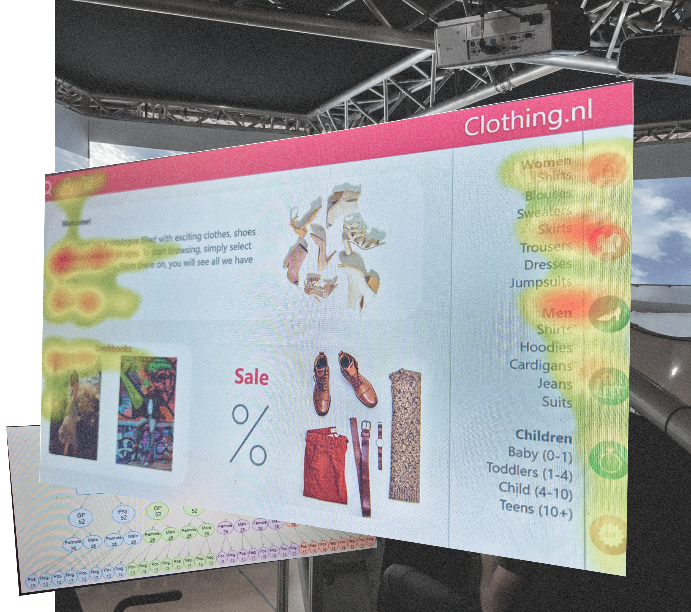

User
Understanding
studies & data collection
My background spans empirical user research and data-driven analysis. From driving simulator studies and eye-tracking experiments to qualitative content analyses and consumer dataset evaluations.
By combining controlled lab experiments with real-world behavioral analytics, I turn complex data and statistical insights into evidence-based UX decisions.
google analytics &
social media dashboards
Experience with Google Analytics and a range of social media dashboards, including Meta Business Suite, Instagram Professional Dashboard, TikTok Analytics, and YouTube Studio, forms part of a regular workflow focused on monitoring content performance, understanding user behavior, and evaluating engagement metrics across platforms.
I use these insights to assess reach, optimize content strategies, and make data-driven decisions aimed at improving engagement and audience growth. My background also includes applying analytics in a professional context to better understand user behavior and refine digital experiences based on measurable performance data.
user data analysis
My experience in Customer Experience (CX) research and data-driven market analysis within the automotive industry includes statistical evaluations of luxury consumer data on behalf of BMW, providing key insights for strategic decision-making.
Additionally, I analyze large-scale industry datasets such as the Deloitte Global Automotive Consumer Study to translate consumer behavior patterns into actionable market positioning and product strategies. My work also touches on data ecosystem initiatives like Catena-X to foster cross-stakeholder collaboration.
Across these projects, I focus on turning complex consumer and market data into clear, evidence-based insights that drive CX innovation and automotive strategy.
← swipe to navigate →
